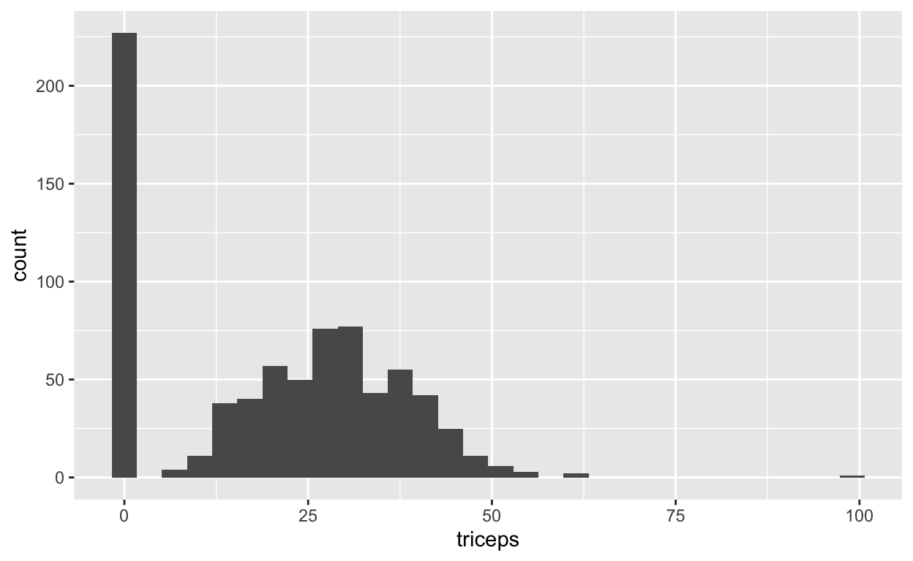
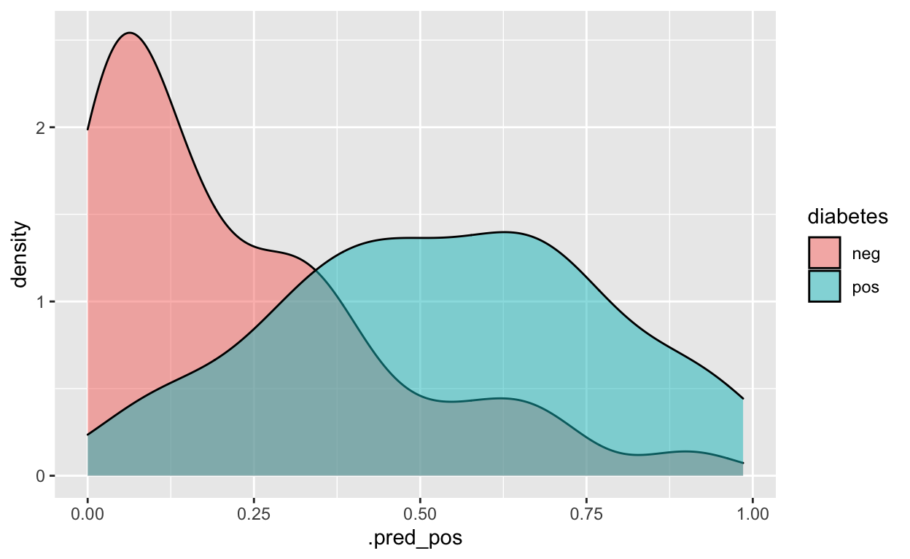

Blog van Rebecca Barter onder de titel ‘Tidymodels: tidy machine learning in R’
Tidyverse is misschien wel een van de grootste successen van R de laatste jaren. Het is een basispakket (een suite van pakketten) waarmee je heel veel statistiscche bewerkingen goed en betrekkelijk eenvoudig kunt uitvoeren. De laatste jaren is tidymodels ontwikkeld dat voor het modelleren van data het basispakket moet worden en het ontwikkelt zich vergelijkbaar de gereedschapskist van tidyverse maar dan op het gebied van machine learning.
Waarom tidymodels? Nou, het blijkt dat R een consistentieprobleem heeft. Omdat alles rondom machine learning door verschillende mensen is gemaakt, allemaal met verschillende principes, heeft alles een net iets andere interface gekregenen. Om de boel in lijn te houden is onderhand een frustrerende bezigheid. Enkele jaren geleden ontwikkelde Max Kuhn (nu bij RStudio in dienst) het caret R-pakket, dat is zo’n uniforme interface voor een groot aantal machine learning-modellen die er in R zijn. Het programma caret bestaat nog steeds, was in veel opzichten geweldig en is nog steeds goed te gebruiken. Maar in andere opzichten is het beperkt. Zo kan het vrij traag zijn, zelfs bij gebuik van data in bescheiden omvang.
caret was een geweldig uitgangspunt, dus RStudio heeft Max Kuhn ingehuurd om te werken aan een tidy versie van caret. Hij en veel anderen ontwikkelden de afgelopen jaren tidymodels.tidymodels is al een paar jaar in ontwikkeling en delen ervan waren al eerder uitgebracht. Die volledige versie is in het voorjaar van 2020 gepresenteerd en Barter schreef vlak daarvoor deze tutoriol. Ondertussen is het voldoende ontwikkeld als je het wil leren! Terwijl caret niet verder ontwikkeld wordt (je kunt caret blijven gebruiken en je bestaande caret-code werkt nog steeds, het pakket wordt alleen niet onderhouden), zal tidymodels het uiteindelijk overbodig maken.
Deze tutorial van Barter is gebaseerd op Alison Hill’s dia’s van Introduction to Machine Learning with the Tidyverse, die alle dia’s bevat voor de cursus die ze met Garrett Grolemund voor RStudio heeft voorbereid::conf(2020), en Edgar Ruiz’s Gentle introduction to tidymodels op de website van RStudio. In deze tutorial gaat zij ervan uit dat de gebruiker bepaalde basiskennis heeft, voornamelijk omgaan met dplyr (b.v. piping %>% en een functie zoals mutate()).
tidymodels?Net als tidyverse, dat uit verschillende pakketten bestaat zoals ggplot2 en dplyr, zitten er ook in tidymodels enkele kernpakketten, zoals
rsample: voor het uit elkaar halen van een datasample (b.v. train/test of cross-validatie);
recipes: voor pre-procesfuncties;
parsnip: voor het specificeren van het model;
yardstick: voor het evalueren van van het model;
tune: voor het afstemmen van parameters;
workflow: om alles samen te brengen.
Net zoals je de hele suite aan pakketten van tidyverse kunt binnenhalen door library(tidyverse) in te tikken. tidymodels bestaat dus uit verschillende pakketten en soms zal ik hieronder individuele pakketten noemen.
Als je deze pakketten nog niet hebt geïnstalleerd, moet je dat wel eerst doen (slechts één keer) door install.packages("tidymodels") te gebruiken. Vervolgens laad je bepaalde bibliotheken: tidymodels en tidyverse.
Rows: 768
Columns: 9
$ pregnant <dbl> 6, 1, 8, 1, 0, 5, 3, 10, 2, 8, 4, 10, 10, 1, 5, 7, …
$ glucose <dbl> 148, 85, 183, 89, 137, 116, 78, 115, 197, 125, 110,…
$ pressure <dbl> 72, 66, 64, 66, 40, 74, 50, 0, 70, 96, 92, 74, 80, …
$ triceps <dbl> 35, 29, 0, 23, 35, 0, 32, 0, 45, 0, 0, 0, 0, 23, 19…
$ insulin <dbl> 0, 0, 0, 94, 168, 0, 88, 0, 543, 0, 0, 0, 0, 846, 1…
$ mass <dbl> 33.6, 26.6, 23.3, 28.1, 43.1, 25.6, 31.0, 35.3, 30.…
$ pedigree <dbl> 0.627, 0.351, 0.672, 0.167, 2.288, 0.201, 0.248, 0.…
$ age <dbl> 50, 31, 32, 21, 33, 30, 26, 29, 53, 54, 30, 34, 57,…
$ diabetes <fct> pos, neg, pos, neg, pos, neg, pos, neg, pos, pos, n…We zullen gebruik maken van de Pima Indian Women’s diabetes-dataset dat informatie bevat over de diabetes status van 768 Pima Indian vrouwen(diabetes). In de dataset zitten daarnaast enkele predictoren zoals het aantal zwangerschappen (pregnant), concentratie glucose (glucose), diastolische bloeddruk (pressure), triceps huidplooidikte (triceps), 2 uur serum insuline (insuline), BMI (mass), diabetes stamboom functie (pedigree) en hun leeftijd (age). Voor het geval je het je afvraagt, de Pima Indianen zijn een groep indianen die leven in een gebied dat bestaat uit wat nu centraal en zuidelijk Arizona is. De korte naam “Pima” zou afkomstig zijn van een zinsnede die “ik weet het niet” betekent, die ze herhaaldelijk gebruikten in hun eerste ontmoetingen met Spaanse kolonisten. Wikipedia bedankt!
pregnant glucose pressure triceps insulin mass pedigree age
1 6 148 72 35 0 33.6 0.627 50
2 1 85 66 29 0 26.6 0.351 31
3 8 183 64 0 0 23.3 0.672 32
4 1 89 66 23 94 28.1 0.167 21
5 0 137 40 35 168 43.1 2.288 33
6 5 116 74 0 0 25.6 0.201 30
7 3 78 50 32 88 31.0 0.248 26
8 10 115 0 0 0 35.3 0.134 29
9 2 197 70 45 543 30.5 0.158 53
10 8 125 96 0 0 0.0 0.232 54
11 4 110 92 0 0 37.6 0.191 30
12 10 168 74 0 0 38.0 0.537 34
13 10 139 80 0 0 27.1 1.441 57
14 1 189 60 23 846 30.1 0.398 59
15 5 166 72 19 175 25.8 0.587 51
16 7 100 0 0 0 30.0 0.484 32
17 0 118 84 47 230 45.8 0.551 31
18 7 107 74 0 0 29.6 0.254 31
19 1 103 30 38 83 43.3 0.183 33
20 1 115 70 30 96 34.6 0.529 32
21 3 126 88 41 235 39.3 0.704 27
22 8 99 84 0 0 35.4 0.388 50
23 7 196 90 0 0 39.8 0.451 41
24 9 119 80 35 0 29.0 0.263 29
25 11 143 94 33 146 36.6 0.254 51
26 10 125 70 26 115 31.1 0.205 41
27 7 147 76 0 0 39.4 0.257 43
28 1 97 66 15 140 23.2 0.487 22
29 13 145 82 19 110 22.2 0.245 57
30 5 117 92 0 0 34.1 0.337 38
31 5 109 75 26 0 36.0 0.546 60
32 3 158 76 36 245 31.6 0.851 28
33 3 88 58 11 54 24.8 0.267 22
34 6 92 92 0 0 19.9 0.188 28
35 10 122 78 31 0 27.6 0.512 45
36 4 103 60 33 192 24.0 0.966 33
37 11 138 76 0 0 33.2 0.420 35
38 9 102 76 37 0 32.9 0.665 46
39 2 90 68 42 0 38.2 0.503 27
40 4 111 72 47 207 37.1 1.390 56
41 3 180 64 25 70 34.0 0.271 26
42 7 133 84 0 0 40.2 0.696 37
43 7 106 92 18 0 22.7 0.235 48
44 9 171 110 24 240 45.4 0.721 54
45 7 159 64 0 0 27.4 0.294 40
46 0 180 66 39 0 42.0 1.893 25
47 1 146 56 0 0 29.7 0.564 29
48 2 71 70 27 0 28.0 0.586 22
49 7 103 66 32 0 39.1 0.344 31
50 7 105 0 0 0 0.0 0.305 24
51 1 103 80 11 82 19.4 0.491 22
52 1 101 50 15 36 24.2 0.526 26
53 5 88 66 21 23 24.4 0.342 30
54 8 176 90 34 300 33.7 0.467 58
55 7 150 66 42 342 34.7 0.718 42
56 1 73 50 10 0 23.0 0.248 21
57 7 187 68 39 304 37.7 0.254 41
58 0 100 88 60 110 46.8 0.962 31
59 0 146 82 0 0 40.5 1.781 44
60 0 105 64 41 142 41.5 0.173 22
61 2 84 0 0 0 0.0 0.304 21
62 8 133 72 0 0 32.9 0.270 39
63 5 44 62 0 0 25.0 0.587 36
64 2 141 58 34 128 25.4 0.699 24
65 7 114 66 0 0 32.8 0.258 42
66 5 99 74 27 0 29.0 0.203 32
67 0 109 88 30 0 32.5 0.855 38
68 2 109 92 0 0 42.7 0.845 54
69 1 95 66 13 38 19.6 0.334 25
70 4 146 85 27 100 28.9 0.189 27
71 2 100 66 20 90 32.9 0.867 28
72 5 139 64 35 140 28.6 0.411 26
73 13 126 90 0 0 43.4 0.583 42
74 4 129 86 20 270 35.1 0.231 23
75 1 79 75 30 0 32.0 0.396 22
76 1 0 48 20 0 24.7 0.140 22
77 7 62 78 0 0 32.6 0.391 41
78 5 95 72 33 0 37.7 0.370 27
79 0 131 0 0 0 43.2 0.270 26
80 2 112 66 22 0 25.0 0.307 24
81 3 113 44 13 0 22.4 0.140 22
82 2 74 0 0 0 0.0 0.102 22
83 7 83 78 26 71 29.3 0.767 36
84 0 101 65 28 0 24.6 0.237 22
85 5 137 108 0 0 48.8 0.227 37
86 2 110 74 29 125 32.4 0.698 27
87 13 106 72 54 0 36.6 0.178 45
88 2 100 68 25 71 38.5 0.324 26
89 15 136 70 32 110 37.1 0.153 43
90 1 107 68 19 0 26.5 0.165 24
91 1 80 55 0 0 19.1 0.258 21
92 4 123 80 15 176 32.0 0.443 34
93 7 81 78 40 48 46.7 0.261 42
94 4 134 72 0 0 23.8 0.277 60
95 2 142 82 18 64 24.7 0.761 21
96 6 144 72 27 228 33.9 0.255 40
97 2 92 62 28 0 31.6 0.130 24
98 1 71 48 18 76 20.4 0.323 22
99 6 93 50 30 64 28.7 0.356 23
100 1 122 90 51 220 49.7 0.325 31
101 1 163 72 0 0 39.0 1.222 33
102 1 151 60 0 0 26.1 0.179 22
103 0 125 96 0 0 22.5 0.262 21
104 1 81 72 18 40 26.6 0.283 24
105 2 85 65 0 0 39.6 0.930 27
106 1 126 56 29 152 28.7 0.801 21
107 1 96 122 0 0 22.4 0.207 27
108 4 144 58 28 140 29.5 0.287 37
109 3 83 58 31 18 34.3 0.336 25
110 0 95 85 25 36 37.4 0.247 24
111 3 171 72 33 135 33.3 0.199 24
112 8 155 62 26 495 34.0 0.543 46
113 1 89 76 34 37 31.2 0.192 23
114 4 76 62 0 0 34.0 0.391 25
115 7 160 54 32 175 30.5 0.588 39
116 4 146 92 0 0 31.2 0.539 61
117 5 124 74 0 0 34.0 0.220 38
118 5 78 48 0 0 33.7 0.654 25
119 4 97 60 23 0 28.2 0.443 22
120 4 99 76 15 51 23.2 0.223 21
121 0 162 76 56 100 53.2 0.759 25
122 6 111 64 39 0 34.2 0.260 24
123 2 107 74 30 100 33.6 0.404 23
124 5 132 80 0 0 26.8 0.186 69
125 0 113 76 0 0 33.3 0.278 23
126 1 88 30 42 99 55.0 0.496 26
127 3 120 70 30 135 42.9 0.452 30
128 1 118 58 36 94 33.3 0.261 23
129 1 117 88 24 145 34.5 0.403 40
130 0 105 84 0 0 27.9 0.741 62
131 4 173 70 14 168 29.7 0.361 33
132 9 122 56 0 0 33.3 1.114 33
133 3 170 64 37 225 34.5 0.356 30
134 8 84 74 31 0 38.3 0.457 39
135 2 96 68 13 49 21.1 0.647 26
136 2 125 60 20 140 33.8 0.088 31
137 0 100 70 26 50 30.8 0.597 21
138 0 93 60 25 92 28.7 0.532 22
139 0 129 80 0 0 31.2 0.703 29
140 5 105 72 29 325 36.9 0.159 28
141 3 128 78 0 0 21.1 0.268 55
142 5 106 82 30 0 39.5 0.286 38
143 2 108 52 26 63 32.5 0.318 22
144 10 108 66 0 0 32.4 0.272 42
145 4 154 62 31 284 32.8 0.237 23
146 0 102 75 23 0 0.0 0.572 21
147 9 57 80 37 0 32.8 0.096 41
148 2 106 64 35 119 30.5 1.400 34
149 5 147 78 0 0 33.7 0.218 65
150 2 90 70 17 0 27.3 0.085 22
151 1 136 74 50 204 37.4 0.399 24
152 4 114 65 0 0 21.9 0.432 37
153 9 156 86 28 155 34.3 1.189 42
154 1 153 82 42 485 40.6 0.687 23
155 8 188 78 0 0 47.9 0.137 43
156 7 152 88 44 0 50.0 0.337 36
157 2 99 52 15 94 24.6 0.637 21
158 1 109 56 21 135 25.2 0.833 23
159 2 88 74 19 53 29.0 0.229 22
160 17 163 72 41 114 40.9 0.817 47
161 4 151 90 38 0 29.7 0.294 36
162 7 102 74 40 105 37.2 0.204 45
163 0 114 80 34 285 44.2 0.167 27
164 2 100 64 23 0 29.7 0.368 21
165 0 131 88 0 0 31.6 0.743 32
166 6 104 74 18 156 29.9 0.722 41
167 3 148 66 25 0 32.5 0.256 22
168 4 120 68 0 0 29.6 0.709 34
169 4 110 66 0 0 31.9 0.471 29
170 3 111 90 12 78 28.4 0.495 29
171 6 102 82 0 0 30.8 0.180 36
172 6 134 70 23 130 35.4 0.542 29
173 2 87 0 23 0 28.9 0.773 25
174 1 79 60 42 48 43.5 0.678 23
175 2 75 64 24 55 29.7 0.370 33
176 8 179 72 42 130 32.7 0.719 36
177 6 85 78 0 0 31.2 0.382 42
178 0 129 110 46 130 67.1 0.319 26
179 5 143 78 0 0 45.0 0.190 47
180 5 130 82 0 0 39.1 0.956 37
181 6 87 80 0 0 23.2 0.084 32
182 0 119 64 18 92 34.9 0.725 23
183 1 0 74 20 23 27.7 0.299 21
184 5 73 60 0 0 26.8 0.268 27
185 4 141 74 0 0 27.6 0.244 40
186 7 194 68 28 0 35.9 0.745 41
187 8 181 68 36 495 30.1 0.615 60
188 1 128 98 41 58 32.0 1.321 33
189 8 109 76 39 114 27.9 0.640 31
190 5 139 80 35 160 31.6 0.361 25
191 3 111 62 0 0 22.6 0.142 21
192 9 123 70 44 94 33.1 0.374 40
193 7 159 66 0 0 30.4 0.383 36
194 11 135 0 0 0 52.3 0.578 40
195 8 85 55 20 0 24.4 0.136 42
196 5 158 84 41 210 39.4 0.395 29
197 1 105 58 0 0 24.3 0.187 21
198 3 107 62 13 48 22.9 0.678 23
199 4 109 64 44 99 34.8 0.905 26
200 4 148 60 27 318 30.9 0.150 29
201 0 113 80 16 0 31.0 0.874 21
202 1 138 82 0 0 40.1 0.236 28
203 0 108 68 20 0 27.3 0.787 32
204 2 99 70 16 44 20.4 0.235 27
205 6 103 72 32 190 37.7 0.324 55
206 5 111 72 28 0 23.9 0.407 27
207 8 196 76 29 280 37.5 0.605 57
208 5 162 104 0 0 37.7 0.151 52
209 1 96 64 27 87 33.2 0.289 21
210 7 184 84 33 0 35.5 0.355 41
211 2 81 60 22 0 27.7 0.290 25
212 0 147 85 54 0 42.8 0.375 24
213 7 179 95 31 0 34.2 0.164 60
214 0 140 65 26 130 42.6 0.431 24
215 9 112 82 32 175 34.2 0.260 36
216 12 151 70 40 271 41.8 0.742 38
217 5 109 62 41 129 35.8 0.514 25
218 6 125 68 30 120 30.0 0.464 32
219 5 85 74 22 0 29.0 1.224 32
220 5 112 66 0 0 37.8 0.261 41
221 0 177 60 29 478 34.6 1.072 21
222 2 158 90 0 0 31.6 0.805 66
223 7 119 0 0 0 25.2 0.209 37
224 7 142 60 33 190 28.8 0.687 61
225 1 100 66 15 56 23.6 0.666 26
226 1 87 78 27 32 34.6 0.101 22
227 0 101 76 0 0 35.7 0.198 26
228 3 162 52 38 0 37.2 0.652 24
229 4 197 70 39 744 36.7 2.329 31
230 0 117 80 31 53 45.2 0.089 24
231 4 142 86 0 0 44.0 0.645 22
232 6 134 80 37 370 46.2 0.238 46
233 1 79 80 25 37 25.4 0.583 22
234 4 122 68 0 0 35.0 0.394 29
235 3 74 68 28 45 29.7 0.293 23
236 4 171 72 0 0 43.6 0.479 26
237 7 181 84 21 192 35.9 0.586 51
238 0 179 90 27 0 44.1 0.686 23
239 9 164 84 21 0 30.8 0.831 32
240 0 104 76 0 0 18.4 0.582 27
241 1 91 64 24 0 29.2 0.192 21
242 4 91 70 32 88 33.1 0.446 22
243 3 139 54 0 0 25.6 0.402 22
244 6 119 50 22 176 27.1 1.318 33
245 2 146 76 35 194 38.2 0.329 29
246 9 184 85 15 0 30.0 1.213 49
247 10 122 68 0 0 31.2 0.258 41
248 0 165 90 33 680 52.3 0.427 23
249 9 124 70 33 402 35.4 0.282 34
250 1 111 86 19 0 30.1 0.143 23
251 9 106 52 0 0 31.2 0.380 42
252 2 129 84 0 0 28.0 0.284 27
253 2 90 80 14 55 24.4 0.249 24
254 0 86 68 32 0 35.8 0.238 25
255 12 92 62 7 258 27.6 0.926 44
256 1 113 64 35 0 33.6 0.543 21
257 3 111 56 39 0 30.1 0.557 30
258 2 114 68 22 0 28.7 0.092 25
259 1 193 50 16 375 25.9 0.655 24
260 11 155 76 28 150 33.3 1.353 51
261 3 191 68 15 130 30.9 0.299 34
262 3 141 0 0 0 30.0 0.761 27
263 4 95 70 32 0 32.1 0.612 24
264 3 142 80 15 0 32.4 0.200 63
265 4 123 62 0 0 32.0 0.226 35
266 5 96 74 18 67 33.6 0.997 43
267 0 138 0 0 0 36.3 0.933 25
268 2 128 64 42 0 40.0 1.101 24
269 0 102 52 0 0 25.1 0.078 21
270 2 146 0 0 0 27.5 0.240 28
271 10 101 86 37 0 45.6 1.136 38
272 2 108 62 32 56 25.2 0.128 21
273 3 122 78 0 0 23.0 0.254 40
274 1 71 78 50 45 33.2 0.422 21
275 13 106 70 0 0 34.2 0.251 52
276 2 100 70 52 57 40.5 0.677 25
277 7 106 60 24 0 26.5 0.296 29
278 0 104 64 23 116 27.8 0.454 23
279 5 114 74 0 0 24.9 0.744 57
280 2 108 62 10 278 25.3 0.881 22
281 0 146 70 0 0 37.9 0.334 28
282 10 129 76 28 122 35.9 0.280 39
283 7 133 88 15 155 32.4 0.262 37
284 7 161 86 0 0 30.4 0.165 47
285 2 108 80 0 0 27.0 0.259 52
286 7 136 74 26 135 26.0 0.647 51
287 5 155 84 44 545 38.7 0.619 34
288 1 119 86 39 220 45.6 0.808 29
289 4 96 56 17 49 20.8 0.340 26
290 5 108 72 43 75 36.1 0.263 33
291 0 78 88 29 40 36.9 0.434 21
292 0 107 62 30 74 36.6 0.757 25
293 2 128 78 37 182 43.3 1.224 31
294 1 128 48 45 194 40.5 0.613 24
295 0 161 50 0 0 21.9 0.254 65
296 6 151 62 31 120 35.5 0.692 28
297 2 146 70 38 360 28.0 0.337 29
298 0 126 84 29 215 30.7 0.520 24
299 14 100 78 25 184 36.6 0.412 46
300 8 112 72 0 0 23.6 0.840 58
301 0 167 0 0 0 32.3 0.839 30
302 2 144 58 33 135 31.6 0.422 25
303 5 77 82 41 42 35.8 0.156 35
304 5 115 98 0 0 52.9 0.209 28
305 3 150 76 0 0 21.0 0.207 37
306 2 120 76 37 105 39.7 0.215 29
307 10 161 68 23 132 25.5 0.326 47
308 0 137 68 14 148 24.8 0.143 21
309 0 128 68 19 180 30.5 1.391 25
310 2 124 68 28 205 32.9 0.875 30
311 6 80 66 30 0 26.2 0.313 41
312 0 106 70 37 148 39.4 0.605 22
313 2 155 74 17 96 26.6 0.433 27
314 3 113 50 10 85 29.5 0.626 25
315 7 109 80 31 0 35.9 1.127 43
316 2 112 68 22 94 34.1 0.315 26
317 3 99 80 11 64 19.3 0.284 30
318 3 182 74 0 0 30.5 0.345 29
319 3 115 66 39 140 38.1 0.150 28
320 6 194 78 0 0 23.5 0.129 59
321 4 129 60 12 231 27.5 0.527 31
322 3 112 74 30 0 31.6 0.197 25
323 0 124 70 20 0 27.4 0.254 36
324 13 152 90 33 29 26.8 0.731 43
325 2 112 75 32 0 35.7 0.148 21
326 1 157 72 21 168 25.6 0.123 24
327 1 122 64 32 156 35.1 0.692 30
328 10 179 70 0 0 35.1 0.200 37
329 2 102 86 36 120 45.5 0.127 23
330 6 105 70 32 68 30.8 0.122 37
331 8 118 72 19 0 23.1 1.476 46
332 2 87 58 16 52 32.7 0.166 25
333 1 180 0 0 0 43.3 0.282 41
334 12 106 80 0 0 23.6 0.137 44
335 1 95 60 18 58 23.9 0.260 22
336 0 165 76 43 255 47.9 0.259 26
337 0 117 0 0 0 33.8 0.932 44
338 5 115 76 0 0 31.2 0.343 44
339 9 152 78 34 171 34.2 0.893 33
340 7 178 84 0 0 39.9 0.331 41
341 1 130 70 13 105 25.9 0.472 22
342 1 95 74 21 73 25.9 0.673 36
343 1 0 68 35 0 32.0 0.389 22
344 5 122 86 0 0 34.7 0.290 33
345 8 95 72 0 0 36.8 0.485 57
346 8 126 88 36 108 38.5 0.349 49
347 1 139 46 19 83 28.7 0.654 22
348 3 116 0 0 0 23.5 0.187 23
349 3 99 62 19 74 21.8 0.279 26
350 5 0 80 32 0 41.0 0.346 37
351 4 92 80 0 0 42.2 0.237 29
352 4 137 84 0 0 31.2 0.252 30
353 3 61 82 28 0 34.4 0.243 46
354 1 90 62 12 43 27.2 0.580 24
355 3 90 78 0 0 42.7 0.559 21
356 9 165 88 0 0 30.4 0.302 49
357 1 125 50 40 167 33.3 0.962 28
358 13 129 0 30 0 39.9 0.569 44
359 12 88 74 40 54 35.3 0.378 48
360 1 196 76 36 249 36.5 0.875 29
361 5 189 64 33 325 31.2 0.583 29
362 5 158 70 0 0 29.8 0.207 63
363 5 103 108 37 0 39.2 0.305 65
364 4 146 78 0 0 38.5 0.520 67
365 4 147 74 25 293 34.9 0.385 30
366 5 99 54 28 83 34.0 0.499 30
367 6 124 72 0 0 27.6 0.368 29
368 0 101 64 17 0 21.0 0.252 21
369 3 81 86 16 66 27.5 0.306 22
370 1 133 102 28 140 32.8 0.234 45
371 3 173 82 48 465 38.4 2.137 25
372 0 118 64 23 89 0.0 1.731 21
373 0 84 64 22 66 35.8 0.545 21
374 2 105 58 40 94 34.9 0.225 25
375 2 122 52 43 158 36.2 0.816 28
376 12 140 82 43 325 39.2 0.528 58
377 0 98 82 15 84 25.2 0.299 22
378 1 87 60 37 75 37.2 0.509 22
379 4 156 75 0 0 48.3 0.238 32
380 0 93 100 39 72 43.4 1.021 35
381 1 107 72 30 82 30.8 0.821 24
382 0 105 68 22 0 20.0 0.236 22
383 1 109 60 8 182 25.4 0.947 21
384 1 90 62 18 59 25.1 1.268 25
385 1 125 70 24 110 24.3 0.221 25
386 1 119 54 13 50 22.3 0.205 24
387 5 116 74 29 0 32.3 0.660 35
388 8 105 100 36 0 43.3 0.239 45
389 5 144 82 26 285 32.0 0.452 58
390 3 100 68 23 81 31.6 0.949 28
391 1 100 66 29 196 32.0 0.444 42
392 5 166 76 0 0 45.7 0.340 27
393 1 131 64 14 415 23.7 0.389 21
394 4 116 72 12 87 22.1 0.463 37
395 4 158 78 0 0 32.9 0.803 31
396 2 127 58 24 275 27.7 1.600 25
397 3 96 56 34 115 24.7 0.944 39
398 0 131 66 40 0 34.3 0.196 22
399 3 82 70 0 0 21.1 0.389 25
400 3 193 70 31 0 34.9 0.241 25
401 4 95 64 0 0 32.0 0.161 31
402 6 137 61 0 0 24.2 0.151 55
403 5 136 84 41 88 35.0 0.286 35
404 9 72 78 25 0 31.6 0.280 38
405 5 168 64 0 0 32.9 0.135 41
406 2 123 48 32 165 42.1 0.520 26
407 4 115 72 0 0 28.9 0.376 46
408 0 101 62 0 0 21.9 0.336 25
409 8 197 74 0 0 25.9 1.191 39
410 1 172 68 49 579 42.4 0.702 28
411 6 102 90 39 0 35.7 0.674 28
412 1 112 72 30 176 34.4 0.528 25
413 1 143 84 23 310 42.4 1.076 22
414 1 143 74 22 61 26.2 0.256 21
415 0 138 60 35 167 34.6 0.534 21
416 3 173 84 33 474 35.7 0.258 22
417 1 97 68 21 0 27.2 1.095 22
418 4 144 82 32 0 38.5 0.554 37
419 1 83 68 0 0 18.2 0.624 27
420 3 129 64 29 115 26.4 0.219 28
421 1 119 88 41 170 45.3 0.507 26
422 2 94 68 18 76 26.0 0.561 21
423 0 102 64 46 78 40.6 0.496 21
424 2 115 64 22 0 30.8 0.421 21
425 8 151 78 32 210 42.9 0.516 36
426 4 184 78 39 277 37.0 0.264 31
427 0 94 0 0 0 0.0 0.256 25
428 1 181 64 30 180 34.1 0.328 38
429 0 135 94 46 145 40.6 0.284 26
430 1 95 82 25 180 35.0 0.233 43
431 2 99 0 0 0 22.2 0.108 23
432 3 89 74 16 85 30.4 0.551 38
433 1 80 74 11 60 30.0 0.527 22
434 2 139 75 0 0 25.6 0.167 29
435 1 90 68 8 0 24.5 1.138 36
436 0 141 0 0 0 42.4 0.205 29
437 12 140 85 33 0 37.4 0.244 41
438 5 147 75 0 0 29.9 0.434 28
439 1 97 70 15 0 18.2 0.147 21
440 6 107 88 0 0 36.8 0.727 31
441 0 189 104 25 0 34.3 0.435 41
442 2 83 66 23 50 32.2 0.497 22
443 4 117 64 27 120 33.2 0.230 24
444 8 108 70 0 0 30.5 0.955 33
445 4 117 62 12 0 29.7 0.380 30
446 0 180 78 63 14 59.4 2.420 25
447 1 100 72 12 70 25.3 0.658 28
448 0 95 80 45 92 36.5 0.330 26
449 0 104 64 37 64 33.6 0.510 22
450 0 120 74 18 63 30.5 0.285 26
451 1 82 64 13 95 21.2 0.415 23
452 2 134 70 0 0 28.9 0.542 23
453 0 91 68 32 210 39.9 0.381 25
454 2 119 0 0 0 19.6 0.832 72
455 2 100 54 28 105 37.8 0.498 24
456 14 175 62 30 0 33.6 0.212 38
457 1 135 54 0 0 26.7 0.687 62
458 5 86 68 28 71 30.2 0.364 24
459 10 148 84 48 237 37.6 1.001 51
460 9 134 74 33 60 25.9 0.460 81
461 9 120 72 22 56 20.8 0.733 48
462 1 71 62 0 0 21.8 0.416 26
463 8 74 70 40 49 35.3 0.705 39
464 5 88 78 30 0 27.6 0.258 37
465 10 115 98 0 0 24.0 1.022 34
466 0 124 56 13 105 21.8 0.452 21
467 0 74 52 10 36 27.8 0.269 22
468 0 97 64 36 100 36.8 0.600 25
469 8 120 0 0 0 30.0 0.183 38
470 6 154 78 41 140 46.1 0.571 27
471 1 144 82 40 0 41.3 0.607 28
472 0 137 70 38 0 33.2 0.170 22
473 0 119 66 27 0 38.8 0.259 22
474 7 136 90 0 0 29.9 0.210 50
475 4 114 64 0 0 28.9 0.126 24
476 0 137 84 27 0 27.3 0.231 59
477 2 105 80 45 191 33.7 0.711 29
478 7 114 76 17 110 23.8 0.466 31
479 8 126 74 38 75 25.9 0.162 39
480 4 132 86 31 0 28.0 0.419 63
481 3 158 70 30 328 35.5 0.344 35
482 0 123 88 37 0 35.2 0.197 29
483 4 85 58 22 49 27.8 0.306 28
484 0 84 82 31 125 38.2 0.233 23
485 0 145 0 0 0 44.2 0.630 31
486 0 135 68 42 250 42.3 0.365 24
487 1 139 62 41 480 40.7 0.536 21
488 0 173 78 32 265 46.5 1.159 58
489 4 99 72 17 0 25.6 0.294 28
490 8 194 80 0 0 26.1 0.551 67
491 2 83 65 28 66 36.8 0.629 24
492 2 89 90 30 0 33.5 0.292 42
493 4 99 68 38 0 32.8 0.145 33
494 4 125 70 18 122 28.9 1.144 45
495 3 80 0 0 0 0.0 0.174 22
496 6 166 74 0 0 26.6 0.304 66
497 5 110 68 0 0 26.0 0.292 30
498 2 81 72 15 76 30.1 0.547 25
499 7 195 70 33 145 25.1 0.163 55
500 6 154 74 32 193 29.3 0.839 39
501 2 117 90 19 71 25.2 0.313 21
502 3 84 72 32 0 37.2 0.267 28
503 6 0 68 41 0 39.0 0.727 41
504 7 94 64 25 79 33.3 0.738 41
505 3 96 78 39 0 37.3 0.238 40
506 10 75 82 0 0 33.3 0.263 38
507 0 180 90 26 90 36.5 0.314 35
508 1 130 60 23 170 28.6 0.692 21
509 2 84 50 23 76 30.4 0.968 21
510 8 120 78 0 0 25.0 0.409 64
511 12 84 72 31 0 29.7 0.297 46
512 0 139 62 17 210 22.1 0.207 21
513 9 91 68 0 0 24.2 0.200 58
514 2 91 62 0 0 27.3 0.525 22
515 3 99 54 19 86 25.6 0.154 24
516 3 163 70 18 105 31.6 0.268 28
517 9 145 88 34 165 30.3 0.771 53
518 7 125 86 0 0 37.6 0.304 51
519 13 76 60 0 0 32.8 0.180 41
520 6 129 90 7 326 19.6 0.582 60
521 2 68 70 32 66 25.0 0.187 25
522 3 124 80 33 130 33.2 0.305 26
523 6 114 0 0 0 0.0 0.189 26
524 9 130 70 0 0 34.2 0.652 45
525 3 125 58 0 0 31.6 0.151 24
526 3 87 60 18 0 21.8 0.444 21
527 1 97 64 19 82 18.2 0.299 21
528 3 116 74 15 105 26.3 0.107 24
529 0 117 66 31 188 30.8 0.493 22
530 0 111 65 0 0 24.6 0.660 31
531 2 122 60 18 106 29.8 0.717 22
532 0 107 76 0 0 45.3 0.686 24
533 1 86 66 52 65 41.3 0.917 29
534 6 91 0 0 0 29.8 0.501 31
535 1 77 56 30 56 33.3 1.251 24
536 4 132 0 0 0 32.9 0.302 23
537 0 105 90 0 0 29.6 0.197 46
538 0 57 60 0 0 21.7 0.735 67
539 0 127 80 37 210 36.3 0.804 23
540 3 129 92 49 155 36.4 0.968 32
541 8 100 74 40 215 39.4 0.661 43
542 3 128 72 25 190 32.4 0.549 27
543 10 90 85 32 0 34.9 0.825 56
544 4 84 90 23 56 39.5 0.159 25
545 1 88 78 29 76 32.0 0.365 29
546 8 186 90 35 225 34.5 0.423 37
547 5 187 76 27 207 43.6 1.034 53
548 4 131 68 21 166 33.1 0.160 28
549 1 164 82 43 67 32.8 0.341 50
550 4 189 110 31 0 28.5 0.680 37
551 1 116 70 28 0 27.4 0.204 21
552 3 84 68 30 106 31.9 0.591 25
553 6 114 88 0 0 27.8 0.247 66
554 1 88 62 24 44 29.9 0.422 23
555 1 84 64 23 115 36.9 0.471 28
556 7 124 70 33 215 25.5 0.161 37
557 1 97 70 40 0 38.1 0.218 30
558 8 110 76 0 0 27.8 0.237 58
559 11 103 68 40 0 46.2 0.126 42
560 11 85 74 0 0 30.1 0.300 35
561 6 125 76 0 0 33.8 0.121 54
562 0 198 66 32 274 41.3 0.502 28
563 1 87 68 34 77 37.6 0.401 24
564 6 99 60 19 54 26.9 0.497 32
565 0 91 80 0 0 32.4 0.601 27
566 2 95 54 14 88 26.1 0.748 22
567 1 99 72 30 18 38.6 0.412 21
568 6 92 62 32 126 32.0 0.085 46
569 4 154 72 29 126 31.3 0.338 37
570 0 121 66 30 165 34.3 0.203 33
571 3 78 70 0 0 32.5 0.270 39
572 2 130 96 0 0 22.6 0.268 21
573 3 111 58 31 44 29.5 0.430 22
574 2 98 60 17 120 34.7 0.198 22
575 1 143 86 30 330 30.1 0.892 23
576 1 119 44 47 63 35.5 0.280 25
577 6 108 44 20 130 24.0 0.813 35
578 2 118 80 0 0 42.9 0.693 21
579 10 133 68 0 0 27.0 0.245 36
580 2 197 70 99 0 34.7 0.575 62
581 0 151 90 46 0 42.1 0.371 21
582 6 109 60 27 0 25.0 0.206 27
583 12 121 78 17 0 26.5 0.259 62
584 8 100 76 0 0 38.7 0.190 42
585 8 124 76 24 600 28.7 0.687 52
586 1 93 56 11 0 22.5 0.417 22
587 8 143 66 0 0 34.9 0.129 41
588 6 103 66 0 0 24.3 0.249 29
589 3 176 86 27 156 33.3 1.154 52
590 0 73 0 0 0 21.1 0.342 25
591 11 111 84 40 0 46.8 0.925 45
592 2 112 78 50 140 39.4 0.175 24
593 3 132 80 0 0 34.4 0.402 44
594 2 82 52 22 115 28.5 1.699 25
595 6 123 72 45 230 33.6 0.733 34
596 0 188 82 14 185 32.0 0.682 22
597 0 67 76 0 0 45.3 0.194 46
598 1 89 24 19 25 27.8 0.559 21
599 1 173 74 0 0 36.8 0.088 38
600 1 109 38 18 120 23.1 0.407 26
601 1 108 88 19 0 27.1 0.400 24
602 6 96 0 0 0 23.7 0.190 28
603 1 124 74 36 0 27.8 0.100 30
604 7 150 78 29 126 35.2 0.692 54
605 4 183 0 0 0 28.4 0.212 36
606 1 124 60 32 0 35.8 0.514 21
607 1 181 78 42 293 40.0 1.258 22
608 1 92 62 25 41 19.5 0.482 25
609 0 152 82 39 272 41.5 0.270 27
610 1 111 62 13 182 24.0 0.138 23
611 3 106 54 21 158 30.9 0.292 24
612 3 174 58 22 194 32.9 0.593 36
613 7 168 88 42 321 38.2 0.787 40
614 6 105 80 28 0 32.5 0.878 26
615 11 138 74 26 144 36.1 0.557 50
616 3 106 72 0 0 25.8 0.207 27
617 6 117 96 0 0 28.7 0.157 30
618 2 68 62 13 15 20.1 0.257 23
619 9 112 82 24 0 28.2 1.282 50
620 0 119 0 0 0 32.4 0.141 24
621 2 112 86 42 160 38.4 0.246 28
622 2 92 76 20 0 24.2 1.698 28
623 6 183 94 0 0 40.8 1.461 45
624 0 94 70 27 115 43.5 0.347 21
625 2 108 64 0 0 30.8 0.158 21
626 4 90 88 47 54 37.7 0.362 29
627 0 125 68 0 0 24.7 0.206 21
628 0 132 78 0 0 32.4 0.393 21
629 5 128 80 0 0 34.6 0.144 45
630 4 94 65 22 0 24.7 0.148 21
631 7 114 64 0 0 27.4 0.732 34
632 0 102 78 40 90 34.5 0.238 24
633 2 111 60 0 0 26.2 0.343 23
634 1 128 82 17 183 27.5 0.115 22
635 10 92 62 0 0 25.9 0.167 31
636 13 104 72 0 0 31.2 0.465 38
637 5 104 74 0 0 28.8 0.153 48
638 2 94 76 18 66 31.6 0.649 23
639 7 97 76 32 91 40.9 0.871 32
640 1 100 74 12 46 19.5 0.149 28
641 0 102 86 17 105 29.3 0.695 27
642 4 128 70 0 0 34.3 0.303 24
643 6 147 80 0 0 29.5 0.178 50
644 4 90 0 0 0 28.0 0.610 31
645 3 103 72 30 152 27.6 0.730 27
646 2 157 74 35 440 39.4 0.134 30
647 1 167 74 17 144 23.4 0.447 33
648 0 179 50 36 159 37.8 0.455 22
649 11 136 84 35 130 28.3 0.260 42
650 0 107 60 25 0 26.4 0.133 23
651 1 91 54 25 100 25.2 0.234 23
652 1 117 60 23 106 33.8 0.466 27
653 5 123 74 40 77 34.1 0.269 28
654 2 120 54 0 0 26.8 0.455 27
655 1 106 70 28 135 34.2 0.142 22
656 2 155 52 27 540 38.7 0.240 25
657 2 101 58 35 90 21.8 0.155 22
658 1 120 80 48 200 38.9 1.162 41
659 11 127 106 0 0 39.0 0.190 51
660 3 80 82 31 70 34.2 1.292 27
661 10 162 84 0 0 27.7 0.182 54
662 1 199 76 43 0 42.9 1.394 22
663 8 167 106 46 231 37.6 0.165 43
664 9 145 80 46 130 37.9 0.637 40
665 6 115 60 39 0 33.7 0.245 40
666 1 112 80 45 132 34.8 0.217 24
667 4 145 82 18 0 32.5 0.235 70
668 10 111 70 27 0 27.5 0.141 40
669 6 98 58 33 190 34.0 0.430 43
670 9 154 78 30 100 30.9 0.164 45
671 6 165 68 26 168 33.6 0.631 49
672 1 99 58 10 0 25.4 0.551 21
673 10 68 106 23 49 35.5 0.285 47
674 3 123 100 35 240 57.3 0.880 22
675 8 91 82 0 0 35.6 0.587 68
676 6 195 70 0 0 30.9 0.328 31
677 9 156 86 0 0 24.8 0.230 53
678 0 93 60 0 0 35.3 0.263 25
679 3 121 52 0 0 36.0 0.127 25
680 2 101 58 17 265 24.2 0.614 23
681 2 56 56 28 45 24.2 0.332 22
682 0 162 76 36 0 49.6 0.364 26
683 0 95 64 39 105 44.6 0.366 22
684 4 125 80 0 0 32.3 0.536 27
685 5 136 82 0 0 0.0 0.640 69
686 2 129 74 26 205 33.2 0.591 25
687 3 130 64 0 0 23.1 0.314 22
688 1 107 50 19 0 28.3 0.181 29
689 1 140 74 26 180 24.1 0.828 23
690 1 144 82 46 180 46.1 0.335 46
691 8 107 80 0 0 24.6 0.856 34
692 13 158 114 0 0 42.3 0.257 44
693 2 121 70 32 95 39.1 0.886 23
694 7 129 68 49 125 38.5 0.439 43
695 2 90 60 0 0 23.5 0.191 25
696 7 142 90 24 480 30.4 0.128 43
697 3 169 74 19 125 29.9 0.268 31
698 0 99 0 0 0 25.0 0.253 22
699 4 127 88 11 155 34.5 0.598 28
700 4 118 70 0 0 44.5 0.904 26
701 2 122 76 27 200 35.9 0.483 26
702 6 125 78 31 0 27.6 0.565 49
703 1 168 88 29 0 35.0 0.905 52
704 2 129 0 0 0 38.5 0.304 41
705 4 110 76 20 100 28.4 0.118 27
706 6 80 80 36 0 39.8 0.177 28
707 10 115 0 0 0 0.0 0.261 30
708 2 127 46 21 335 34.4 0.176 22
709 9 164 78 0 0 32.8 0.148 45
710 2 93 64 32 160 38.0 0.674 23
711 3 158 64 13 387 31.2 0.295 24
712 5 126 78 27 22 29.6 0.439 40
713 10 129 62 36 0 41.2 0.441 38
714 0 134 58 20 291 26.4 0.352 21
715 3 102 74 0 0 29.5 0.121 32
716 7 187 50 33 392 33.9 0.826 34
717 3 173 78 39 185 33.8 0.970 31
718 10 94 72 18 0 23.1 0.595 56
719 1 108 60 46 178 35.5 0.415 24
720 5 97 76 27 0 35.6 0.378 52
721 4 83 86 19 0 29.3 0.317 34
722 1 114 66 36 200 38.1 0.289 21
723 1 149 68 29 127 29.3 0.349 42
724 5 117 86 30 105 39.1 0.251 42
725 1 111 94 0 0 32.8 0.265 45
726 4 112 78 40 0 39.4 0.236 38
727 1 116 78 29 180 36.1 0.496 25
728 0 141 84 26 0 32.4 0.433 22
729 2 175 88 0 0 22.9 0.326 22
730 2 92 52 0 0 30.1 0.141 22
731 3 130 78 23 79 28.4 0.323 34
732 8 120 86 0 0 28.4 0.259 22
733 2 174 88 37 120 44.5 0.646 24
734 2 106 56 27 165 29.0 0.426 22
735 2 105 75 0 0 23.3 0.560 53
736 4 95 60 32 0 35.4 0.284 28
737 0 126 86 27 120 27.4 0.515 21
738 8 65 72 23 0 32.0 0.600 42
739 2 99 60 17 160 36.6 0.453 21
740 1 102 74 0 0 39.5 0.293 42
741 11 120 80 37 150 42.3 0.785 48
742 3 102 44 20 94 30.8 0.400 26
743 1 109 58 18 116 28.5 0.219 22
744 9 140 94 0 0 32.7 0.734 45
745 13 153 88 37 140 40.6 1.174 39
746 12 100 84 33 105 30.0 0.488 46
747 1 147 94 41 0 49.3 0.358 27
748 1 81 74 41 57 46.3 1.096 32
749 3 187 70 22 200 36.4 0.408 36
750 6 162 62 0 0 24.3 0.178 50
751 4 136 70 0 0 31.2 1.182 22
752 1 121 78 39 74 39.0 0.261 28
753 3 108 62 24 0 26.0 0.223 25
754 0 181 88 44 510 43.3 0.222 26
755 8 154 78 32 0 32.4 0.443 45
756 1 128 88 39 110 36.5 1.057 37
757 7 137 90 41 0 32.0 0.391 39
758 0 123 72 0 0 36.3 0.258 52
759 1 106 76 0 0 37.5 0.197 26
760 6 190 92 0 0 35.5 0.278 66
761 2 88 58 26 16 28.4 0.766 22
762 9 170 74 31 0 44.0 0.403 43
763 9 89 62 0 0 22.5 0.142 33
764 10 101 76 48 180 32.9 0.171 63
765 2 122 70 27 0 36.8 0.340 27
766 5 121 72 23 112 26.2 0.245 30
767 1 126 60 0 0 30.1 0.349 47
768 1 93 70 31 0 30.4 0.315 23
diabetes
1 pos
2 neg
3 pos
4 neg
5 pos
6 neg
7 pos
8 neg
9 pos
10 pos
11 neg
12 pos
13 neg
14 pos
15 pos
16 pos
17 pos
18 pos
19 neg
20 pos
21 neg
22 neg
23 pos
24 pos
25 pos
26 pos
27 pos
28 neg
29 neg
30 neg
31 neg
32 pos
33 neg
34 neg
35 neg
36 neg
37 neg
38 pos
39 pos
40 pos
41 neg
42 neg
43 neg
44 pos
45 neg
46 pos
47 neg
48 neg
49 pos
50 neg
51 neg
52 neg
53 neg
54 pos
55 neg
56 neg
57 pos
58 neg
59 neg
60 neg
61 neg
62 pos
63 neg
64 neg
65 pos
66 neg
67 pos
68 neg
69 neg
70 neg
71 pos
72 neg
73 pos
74 neg
75 neg
76 neg
77 neg
78 neg
79 pos
80 neg
81 neg
82 neg
83 neg
84 neg
85 pos
86 neg
87 neg
88 neg
89 pos
90 neg
91 neg
92 neg
93 neg
94 pos
95 neg
96 neg
97 neg
98 neg
99 neg
100 pos
101 pos
102 neg
103 neg
104 neg
105 neg
106 neg
107 neg
108 neg
109 neg
110 pos
111 pos
112 pos
113 neg
114 neg
115 pos
116 pos
117 pos
118 neg
119 neg
120 neg
121 pos
122 neg
123 neg
124 neg
125 pos
126 pos
127 neg
128 neg
129 pos
130 pos
131 pos
132 pos
133 pos
134 neg
135 neg
136 neg
137 neg
138 neg
139 neg
140 neg
141 neg
142 neg
143 neg
144 pos
145 neg
146 neg
147 neg
148 neg
149 neg
150 neg
151 neg
152 neg
153 pos
154 neg
155 pos
156 pos
157 neg
158 neg
159 neg
160 pos
161 neg
162 neg
163 neg
164 neg
165 pos
166 pos
167 neg
168 neg
169 neg
170 neg
171 pos
172 pos
173 neg
174 neg
175 neg
176 pos
177 neg
178 pos
179 neg
180 pos
181 neg
182 neg
183 neg
184 neg
185 neg
186 pos
187 pos
188 pos
189 pos
190 pos
191 neg
192 neg
193 pos
194 pos
195 neg
196 pos
197 neg
198 pos
199 pos
200 pos
201 neg
202 neg
203 neg
204 neg
205 neg
206 neg
207 pos
208 pos
209 neg
210 pos
211 neg
212 neg
213 neg
214 pos
215 pos
216 pos
217 pos
218 neg
219 pos
220 pos
221 pos
222 pos
223 neg
224 neg
225 neg
226 neg
227 neg
228 pos
229 neg
230 neg
231 pos
232 pos
233 neg
234 neg
235 neg
236 pos
237 pos
238 pos
239 pos
240 neg
241 neg
242 neg
243 pos
244 pos
245 neg
246 pos
247 neg
248 neg
249 neg
250 neg
251 neg
252 neg
253 neg
254 neg
255 pos
256 pos
257 neg
258 neg
259 neg
260 pos
261 neg
262 pos
263 neg
264 neg
265 pos
266 neg
267 pos
268 neg
269 neg
270 pos
271 pos
272 neg
273 neg
274 neg
275 neg
276 neg
277 pos
278 neg
279 neg
280 neg
281 pos
282 neg
283 neg
284 pos
285 pos
286 neg
287 neg
288 pos
289 neg
290 neg
291 neg
292 pos
293 pos
294 pos
295 neg
296 neg
297 pos
298 neg
299 pos
300 neg
301 pos
302 pos
303 neg
304 pos
305 neg
306 neg
307 pos
308 neg
309 pos
310 pos
311 neg
312 neg
313 pos
314 neg
315 pos
316 neg
317 neg
318 pos
319 neg
320 pos
321 neg
322 pos
323 pos
324 pos
325 neg
326 neg
327 pos
328 neg
329 pos
330 neg
331 neg
332 neg
333 pos
334 neg
335 neg
336 neg
337 neg
338 pos
339 pos
340 pos
341 neg
342 neg
343 neg
344 neg
345 neg
346 neg
347 neg
348 neg
349 neg
350 pos
351 neg
352 neg
353 neg
354 neg
355 neg
356 pos
357 pos
358 pos
359 neg
360 pos
361 pos
362 neg
363 neg
364 pos
365 neg
366 neg
367 pos
368 neg
369 neg
370 pos
371 pos
372 neg
373 neg
374 neg
375 neg
376 pos
377 neg
378 neg
379 pos
380 neg
381 neg
382 neg
383 neg
384 neg
385 neg
386 neg
387 pos
388 pos
389 pos
390 neg
391 neg
392 pos
393 neg
394 neg
395 pos
396 neg
397 neg
398 pos
399 neg
400 pos
401 pos
402 neg
403 pos
404 neg
405 pos
406 neg
407 pos
408 neg
409 pos
410 pos
411 neg
412 neg
413 neg
414 neg
415 pos
416 pos
417 neg
418 pos
419 neg
420 pos
421 neg
422 neg
423 neg
424 neg
425 pos
426 pos
427 neg
428 pos
429 neg
430 pos
431 neg
432 neg
433 neg
434 neg
435 neg
436 pos
437 neg
438 neg
439 neg
440 neg
441 pos
442 neg
443 neg
444 pos
445 pos
446 pos
447 neg
448 neg
449 pos
450 neg
451 neg
452 pos
453 neg
454 neg
455 neg
456 pos
457 neg
458 neg
459 pos
460 neg
461 neg
462 neg
463 neg
464 neg
465 neg
466 neg
467 neg
468 neg
469 pos
470 neg
471 neg
472 neg
473 neg
474 neg
475 neg
476 neg
477 pos
478 neg
479 neg
480 neg
481 pos
482 neg
483 neg
484 neg
485 pos
486 pos
487 neg
488 neg
489 neg
490 neg
491 neg
492 neg
493 neg
494 pos
495 neg
496 neg
497 neg
498 neg
499 pos
500 neg
501 neg
502 neg
503 pos
504 neg
505 neg
506 neg
507 pos
508 neg
509 neg
510 neg
511 pos
512 neg
513 neg
514 neg
515 neg
516 pos
517 pos
518 neg
519 neg
520 neg
521 neg
522 neg
523 neg
524 pos
525 neg
526 neg
527 neg
528 neg
529 neg
530 neg
531 neg
532 neg
533 neg
534 neg
535 neg
536 pos
537 neg
538 neg
539 neg
540 pos
541 pos
542 pos
543 pos
544 neg
545 neg
546 pos
547 pos
548 neg
549 neg
550 neg
551 neg
552 neg
553 neg
554 neg
555 neg
556 neg
557 neg
558 neg
559 neg
560 neg
561 pos
562 pos
563 neg
564 neg
565 neg
566 neg
567 neg
568 neg
569 neg
570 pos
571 neg
572 neg
573 neg
574 neg
575 neg
576 neg
577 neg
578 pos
579 neg
580 pos
581 pos
582 neg
583 neg
584 neg
585 pos
586 neg
587 pos
588 neg
589 pos
590 neg
591 pos
592 neg
593 pos
594 neg
595 neg
596 pos
597 neg
598 neg
599 pos
600 neg
601 neg
602 neg
603 neg
604 pos
605 pos
606 neg
607 pos
608 neg
609 neg
610 neg
611 neg
612 pos
613 pos
614 neg
615 pos
616 neg
617 neg
618 neg
619 pos
620 pos
621 neg
622 neg
623 neg
624 neg
625 neg
626 neg
627 neg
628 neg
629 neg
630 neg
631 pos
632 neg
633 neg
634 neg
635 neg
636 pos
637 neg
638 neg
639 pos
640 neg
641 neg
642 neg
643 pos
644 neg
645 neg
646 neg
647 pos
648 pos
649 pos
650 neg
651 neg
652 neg
653 neg
654 neg
655 neg
656 pos
657 neg
658 neg
659 neg
660 pos
661 neg
662 pos
663 pos
664 pos
665 pos
666 neg
667 pos
668 pos
669 neg
670 neg
671 neg
672 neg
673 neg
674 neg
675 neg
676 pos
677 pos
678 neg
679 pos
680 neg
681 neg
682 pos
683 neg
684 pos
685 neg
686 neg
687 neg
688 neg
689 neg
690 pos
691 neg
692 pos
693 neg
694 pos
695 neg
696 pos
697 pos
698 neg
699 neg
700 neg
701 neg
702 pos
703 pos
704 neg
705 neg
706 neg
707 pos
708 neg
709 pos
710 pos
711 neg
712 neg
713 pos
714 neg
715 neg
716 pos
717 pos
718 neg
719 neg
720 pos
721 neg
722 neg
723 pos
724 neg
725 neg
726 neg
727 neg
728 neg
729 neg
730 neg
731 pos
732 pos
733 pos
734 neg
735 neg
736 neg
737 neg
738 neg
739 neg
740 pos
741 pos
742 neg
743 neg
744 pos
745 neg
746 neg
747 pos
748 neg
749 pos
750 pos
751 pos
752 neg
753 neg
754 pos
755 pos
756 pos
757 neg
758 pos
759 neg
760 pos
761 neg
762 pos
763 neg
764 neg
765 neg
766 neg
767 pos
768 negEen snelle verkenning van de dataset toont aan dat er meer nullen in de gegevens zitten dan verwacht (vooral omdat een BMI of tricep huiddikte van 0 onmogelijk is), wat betekent dat ontbrekende waarden als nullen worden geregistreerd. Zie bijvoorbeeld het histogram van de tricep huidplooidikte, waar de nullen voor dikte opvallen.

Dit fenomeen is ook te zien in de glucose-, druk-, insuline- en massavariabelen. We zetten eerst de 0-scores in alle variabelen (behalve “zwanger”) over naar NA (missende waarde). Daarvoor gebruiken we de mutate_at()functie (die binnenkort wordt vervangen door mutate() met across()) om aan te geven op welke variabelen we onze muterende functie willen toepassen. We gebruiken de if_else()functie om aan te geven waar we de waarde mee moeten vervangen als de voorwaarde waar of onwaar is.
Onze gegevens zijn klaar. Laten we beginnen met het maken van een aantal tidymodels!
Laten we onze data verdelen in trainings- en testdata. De trainingsdata worden gebruikt om ons model te vinden en de parameters in te stellen (tune). De testdata gebruiken we alleen om de werking van het finale model vast te stellen. Dat splitten kunnen we doen door de inital_split() functie (van het rsample pakket). Dat creëert een speciaal “split” object.
<Analysis/Assess/Total>
<576/192/768>diabetes_split, ons gesplitste object, vertelt ons hoeveel waarnemingen we hebben in de trainingsset, de testset en de gehele dataset: <train/test/totaal> (576/192/768).
De trainings- en testsets kunnen uit het “split”-object worden gehaald met behulp van de training() en testing() functies. Hoewel we deze objecten niet echt zullen gebruiken in de pipeline (daarvoor zullen we het diabetes_split-object zelf gebruiken).
Op een gegeven moment zullen we de parameters hiervan wat willen tuenen (afstemmen). Dat doen we met cross-validatie. Zo ontstaat er met vfold_cv() een cross-validatie versie van de trainingsset waar we zo op terugkomen.
recipeMet het pakket recipes kun je de variabelen een rol geven, als uitkomst of voorspellende variabele (gebruik een “formule”) b.v.. Maar met recipe kun je ook andere voorbereidingsstappen zetten die je nodig acht (zoals standaardiseren, imputeren, PCA, etc). Een recipe voer je uit in delen (gelaagd op elkaar door pipes %>% te gebruiken):
Specificeer de formule (recipe()): specificeer eerst wat is de uitkomstvariabele en wat zijn de predictoren;
Specificeer pre-processing steps (step_zzz()): defineer voorbereidingsstappen, zoals imputatie, creëren van dummy variabelen, schalen en wat al niet meer
Zo kunnen we bijvoorbeeld de volgende recipe maken.
Als je ooit eerder formules hebt gezien (bijvoorbeeld met behulp van de lm() functie in R), dan weet je misschien dat we onze formule veel efficiënter hadden kunnen schrijven met behulp van een shortcut, waarbij de . alle variabelen in de gegevens vertegenwoordigt: outcome ~ .
De volledige lijst van beschikbare voorbewerkingsstappen is hier te vinden. In de bovenstaande chunck hebben we de functies all_numeric() en all_predictors() gebruikt als argumenten van voorbereiding. Deze worden “rolselecties” genoemd en geven aan dat we de stap willen toepassen op “alle numerieke” variabelen of “alle predictoren”. De lijst van alle potentiële rolselectoren kan worden gevonden door ?selectis in je console te typen.
Merk op dat we het originele diabetes_clean data-object hebben gebruikt (we stellen recipe(..., data = diabetes_clean)), in plaats van het diabetes_train-object of het diabetes_split-object. Het blijkt dat we deze allemaal hadden kunnen gebruiken. Alle recipes die op dit punt uit het dataobject worden gehaald zijn de namen en rollen van de uitkomst en de voorspellende variabelen. We zullen deze recipe later toepassen op specifieke datasets. Dit betekent dat voor grote datasets een kleinere dataset gebruikt wordt om tijd en geheugen te besparen.
Inderdaad, als we een samenvatting van het diabetes_recipe object printen, dan laat het ons gewoon zien hoeveel voorspellingsvariabelen we hebben gespecificeerd en welke stappen we hebben gespecificeerd (maar het implementeert ze eigenlijk nog niet!).
Data Recipe
Inputs:
role #variables
outcome 1
predictor 8
Operations:
Centering and scaling for all_numeric()
K-nearest neighbor imputation for all_predictors()Als je de voorbewerkte dataset zelf wilt extraheren, kunt je eerst prep() het recept voor een specifieke dataset en juice() het voorbewerkte recept om de voorbewerkte gegevens te extraheren. Het blijkt dat het extraheren van de voorbewerkte data eigenlijk niet nodig is voor de pipeline, omdat dit onder de motorkap gebeurt als het model geschikt is. Soms is het toch nuttig.
# A tibble: 576 x 9
pregnant glucose pressure triceps insulin mass pedigree age
<dbl> <dbl> <dbl> <dbl> <dbl> <dbl> <dbl> <dbl>
1 0.673 0.837 -0.0581 0.616 0.328 0.187 0.531 1.37
2 -0.824 -1.21 -0.537 0.0354 -0.770 -0.831 -0.359 -0.205
3 1.27 1.98 -0.697 0.229 1.33 -1.31 0.676 -0.122
4 -1.12 0.478 -2.61 0.616 0.0669 1.57 5.89 -0.0396
5 0.374 -0.205 0.102 -0.700 -0.404 -0.977 -0.843 -0.287
6 1.87 -0.238 0.229 0.229 0.558 0.435 -1.06 -0.370
7 -0.525 2.43 -0.218 1.58 3.15 -0.264 -0.982 1.61
8 1.27 0.0877 1.86 -0.178 0.863 0.318 -0.743 1.70
9 0.0743 -0.401 1.54 0.674 0.139 0.769 -0.875 -0.287
10 1.87 0.544 0.581 -0.448 0.666 -0.758 3.16 1.94
# … with 566 more rows, and 1 more variable: diabetes <fct>Tot nu toe hebben we onze data verdeeld in training en test-sets en onze pre-proces stappen gespecificeerd door een recipe te gebruiken. Nu willen we ons model definiëren en daarvoor gebruiken we het parsnip pakket dat in tidymodels zit.
Parsnip biedt een uniforme interface voor de enorme verscheidenheid aan modellen die er in R bestaan. Dit betekent dat je slechts één manier hoeft te leren om een model te specificeren en dan kun je dit gebruiken voor allerlei verschillende modellen, vaak met enkele coderegel.
Er zijn een paar primaire componenten in de modelspecificatie opgeslagen:
Het model type: wat voor soort model wil je gebruiken, zoals rand_forest() voor het random forest-model, logistic_reg() voor het logistisch regressie-model, svm_poly() voor een polynomiaal SVM-model, enz. De volledige lijst van modellen die beschikbaar zijn via parsnip kan [hier] (link naar website) vinden.
De arguments: de model parameter waarden (de benaming is consistent over verschillende modellen), door het gebruik van set_args().
De engine: het onderliggende pakket waar het model van wegkomt (bv. “ranger” voor implementatie van Random Forest), door het gebuik van set_engine().
De mode: het type voorspelling - omdat verschillende pakketten zowel classificatie (binaire/categoriale voorspelling) en regressie (continue voorspelling) kunnen uitvoeren, door het gebruik van set_mode().
Als we bijvoorbeeld een random forest model willen gebruiken, zoals dat in het ranger pakket zit, met als doel classificatie en we willen de try parameter tunen (het afstemmen van het aantal willekeurig gekozen variabelen dat bij elke splitsing in aanmerking moet worden genomen), dan moeten we de volgende modelspecificatie definiëren:
Als je later het variabele belang van jouw uiteindelijke model wilt kunnen onderzoeken, moet je het engine argument opnieuw instellen. De volgende code specificeert bijvoorbeeld een logistisch regressiemodel uit het glm pakket.
Deze code draait niet het model. Net als de recipe, is het veel meer een beschrijving van het model. Echter, wanneer je een parameter op tune() zet wordt het later gestemd in de stemfase van de pipeline (bv. om de waarde vast te stellen van de parameter die de beste performance geeft). Je kunt ook zelf een bepaalde waarde aan de parameter geven wanneer je het niet wilt afstemmen, bv door set_args(mtry = 4) te gebruiken. Een ander ding om op te merken is dat niets wat deze modelspecificatie betreft specifiek is voor de diabetes-dataset.
We zijn klaar om het model en de recipes in een workflow te plaatsen. Een workflow zet je op door het gebruik van workflow() (van het workflows pakket) en dan kun je een recipe en een model toevoegen.
Merk op dat we de voorbewerkingsstappen nog niet in de recipe hebben geïmplementeerd noch dat we het model hebben gepast. We hebben alleen maar het raamwerk geschreven. Pas als we de parameters hebben afgestemd of in het model hebben gepast, worden het recept en het model daadwerkelijk geïmplementeerd.
Omdat er een parameter is ontwikkeld om af te stemmen (mtry), moeten we dat daar voor gebruiken (bv. de waarde kiezen die de beste performance laat zien) voordat we het model passen. Als je geen parameters hebt om af te stemmen, kun je dit deel overslaan.
Dat afstemmen doen we door een cross-validation object (diabetes_cv) te kiezen. Om dat te doen specificeren we de range van mtry waarden die we willen gebruiken en dan voegen we een stemmingslaag toe aan onze workflow door tune_grid() te gebruiken (van het tune pakket). We richten ons op twee maten: accuracy en roc_auc (van het yardstick pakket). Die vertellen ons welke maten we het beste kunnen gebruiken.
Je kunt verschillende parameters afstemmen door verschillende parameters aan de expand.grid() functie toe te voegen, bv. expand.grid(mtry = c(3, 4, 5), trees = c(100, 500)).
Het is altijd goed om de resultaten van de cross-validatie goed te onderzoeken. collect_metrics() is echt een handige functie die in verschillende omstandigheden kan worden gebruikt om te vergelijken die zijn berekend in het object dat is gebruikt. In dit geval komen de maten van de cross-validatie performance over de verschillende waarden van de performance.
# A tibble: 6 x 7
mtry .metric .estimator mean n std_err .config
<dbl> <chr> <chr> <dbl> <int> <dbl> <chr>
1 3 accuracy binary 0.750 10 0.0225 Preprocessor1_Model1
2 3 roc_auc binary 0.829 10 0.0154 Preprocessor1_Model1
3 4 accuracy binary 0.758 10 0.0226 Preprocessor1_Model2
4 4 roc_auc binary 0.828 10 0.0149 Preprocessor1_Model2
5 5 accuracy binary 0.753 10 0.0232 Preprocessor1_Model3
6 5 roc_auc binary 0.826 10 0.0153 Preprocessor1_Model3Ten opzichte van accuracy en AUC laat mtry = 4 de beste performance zien (hoogste gemiddelde waarden).
We willen een laag aan onze workflow toevoegen die overeenkomt met de afgestemde parameter, d.w.z. dat we mtry instellen als de waarde die de beste resultaten opleverde. Als je geen parameters hebt afgestemd, kun je deze stap overslaan.
We kunnen de beste waarde voor de nauwkeurigheidsmetriek extraheren door de select_best()functie toe te passen op het afstemmingsobject.
# A tibble: 1 x 2
mtry .config
<dbl> <chr>
1 4 Preprocessor1_Model2Dan kunnen we deze parameter aan de workflow toevoegen door de finalize_workflow() functie te gebruiken.
Nu we ons recipe en ons model hebben gedefinieerd en de parameters van het model hebben getuned, zijn we klaar om daadwerkelijk het uiteindelijke model te draaien. Aangezien al deze informatie in het workflow-object zit, zullen we de last_fit() functie toepassen op onze workflow en ons train/test-splitsingsobject. Dit zal automatisch het door de workflow gespecificeerde model trainen met behulp van de trainingsgegevens en evaluaties produceren op basis van de testset.
Merk op dat het object dat wordt gecreëerd een data-frame-achtig object is; het is een tibble met listkolommen.
# Resampling results
# Manual resampling
# A tibble: 1 x 6
splits id .metrics .notes .predictions .workflow
<list> <chr> <list> <list> <list> <list>
1 <rsplit [5… train/te… <tibble [2… <tibble … <tibble [192 … <workflo…Dit is echt een aardige eigenschap van tidymodels (en ook waarom je zo goed kunt werken met tidyverse) omdat je al je nette handelingen op het modelobject kunt uitvoeren.
Aangezien we het trainings/testobject al hebben geleverd op het moment dat we in de workflow werken, worden de maten geëvalueerd op de testset. Wanneer we nu de collect_metrics() functie gebruiken (herinner ons dat we deze hebben gebruikt bij het afstemmen van onze parameters), haalt deze de prestaties van het uiteindelijke model (aangezien rf_fit nu bestaat uit een enkel definitief model) toegepast op de test set.
# A tibble: 2 x 4
.metric .estimator .estimate .config
<chr> <chr> <dbl> <chr>
1 accuracy binary 0.745 Preprocessor1_Model1
2 roc_auc binary 0.831 Preprocessor1_Model1Overall is de performance heel goed, met een accuracy van 0.74 en een AUC van 0.82. Maar deze waarden zijn vaak lager dan in de trainingsset.
Je kunt de test set voorspellingen zelf gebruiken met de collect_predictions() functie. Let op dat er 192 rijen in het voorspellingsobject zitten dat overeenkomt met de test set observaties (juist om jou te laten zien dat deze gebaseerd zijn op de testset meer dan op de trainingsset).
# A tibble: 192 x 7
id .pred_neg .pred_pos .row .pred_class diabetes .config
<chr> <dbl> <dbl> <int> <fct> <fct> <chr>
1 train/te… 1.00 0.00045 4 neg neg Preproces…
2 train/te… 0.967 0.0330 7 neg pos Preproces…
3 train/te… 0.0393 0.961 12 pos pos Preproces…
4 train/te… 0.708 0.292 19 neg neg Preproces…
5 train/te… 0.636 0.364 21 neg neg Preproces…
6 train/te… 0.541 0.459 25 neg pos Preproces…
7 train/te… 0.482 0.518 27 pos pos Preproces…
8 train/te… 0.692 0.308 29 neg neg Preproces…
9 train/te… 0.951 0.0493 34 neg neg Preproces…
10 train/te… 0.369 0.631 35 pos neg Preproces…
# … with 182 more rowsOmndat dit een normaal data frame/tibble object is, kunnen we de samenvattingen genereren en een confusie matrix plotten.
Truth
Prediction neg pos
neg 106 33
pos 16 37We kunnen ook de voorspelde kansverdelingen voor elke klasse in kaart brengen.

De voorspellingen kun je ook als volgt laten zien:
[[1]]
# A tibble: 192 x 6
.pred_neg .pred_pos .row .pred_class diabetes .config
<dbl> <dbl> <int> <fct> <fct> <chr>
1 1.00 0.00045 4 neg neg Preprocessor1_Model1
2 0.967 0.0330 7 neg pos Preprocessor1_Model1
3 0.0393 0.961 12 pos pos Preprocessor1_Model1
4 0.708 0.292 19 neg neg Preprocessor1_Model1
5 0.636 0.364 21 neg neg Preprocessor1_Model1
6 0.541 0.459 25 neg pos Preprocessor1_Model1
7 0.482 0.518 27 pos pos Preprocessor1_Model1
8 0.692 0.308 29 neg neg Preprocessor1_Model1
9 0.951 0.0493 34 neg neg Preprocessor1_Model1
10 0.369 0.631 35 pos neg Preprocessor1_Model1
# … with 182 more rowsIn de vorige paragraaf is het model dat is getraind op de trainingsgegevens geëvalueerd aan de hand van de testgegevens. Maar als je eenmaal jouw definitieve model hebt bepaald, wil je het vaak trainen op je volledige dataset en het dan gebruiken om de respons voor nieuwe gegevens te voorspellen.
Als je jouw model wilt gebruiken om de respons voor nieuwe waarnemingen te voorspellen, moet je de fit()functie op jouw workflow gebruiken en de dataset waarop je het uiteindelijke model wilt laten passen (bijvoorbeeld de volledige training + testdataset).
Het final_model object bevat een aantal zaken, waaronder het ranger-object dat getraind is met de parameters die via de workflow in rf_workflow zijn vastgelegd op basis van de gegevens in diabetes_clean (de gecombineerde trainings- en testgegevens).
══ Workflow [trained] ════════════════════════════════════════════════
Preprocessor: Recipe
Model: rand_forest()
── Preprocessor ──────────────────────────────────────────────────────
2 Recipe Steps
• step_normalize()
• step_knnimpute()
── Model ─────────────────────────────────────────────────────────────
Ranger result
Call:
ranger::ranger(x = maybe_data_frame(x), y = y, mtry = min_cols(~4, x), importance = ~"impurity", num.threads = 1, verbose = FALSE, seed = sample.int(10^5, 1), probability = TRUE)
Type: Probability estimation
Number of trees: 500
Sample size: 768
Number of independent variables: 8
Mtry: 4
Target node size: 10
Variable importance mode: impurity
Splitrule: gini
OOB prediction error (Brier s.): 0.1576627 Als we de diabetes status van een nieuwe vrouw willen voorspellen, kunnen we de predict() functie gebruiken.
Bijvoorbeeld, definieren we de data voor een nieuwe vrouw.
# A tibble: 1 x 8
pregnant glucose pressure triceps insulin mass pedigree age
<dbl> <dbl> <dbl> <dbl> <dbl> <dbl> <dbl> <dbl>
1 2 95 70 31 102 28.2 0.67 47De voorspelde diabetes status van deze nieuwe vrouw is “negatief”.
# A tibble: 1 x 1
.pred_class
<fct>
1 neg Als je de belangrijkheid van een variabele uit je model wilt vaststellen, voor zover je dat kan zien, moet je het modelobject uit het fit() object halen (dat voor ons final_model heet). De functie die het model extraheert is pull_workflow_fit() en dan moet je het fit-object pakken dat de output bevat.
Ranger result
Call:
ranger::ranger(x = maybe_data_frame(x), y = y, mtry = min_cols(~4, x), importance = ~"impurity", num.threads = 1, verbose = FALSE, seed = sample.int(10^5, 1), probability = TRUE)
Type: Probability estimation
Number of trees: 500
Sample size: 768
Number of independent variables: 8
Mtry: 4
Target node size: 10
Variable importance mode: impurity
Splitrule: gini
OOB prediction error (Brier s.): 0.1576627 Vervolgens kun je het belang van de variabele uit het ranger-object zelf halen (variable.importance is een specifiek object in de ranger-output - dit zal moeten worden aangepast voor het specifieke objecttype van andere modellen).
pregnant glucose pressure triceps insulin mass pedigree
16.33289 80.62800 17.08757 21.43870 51.76331 42.41799 30.79204
age
34.36002